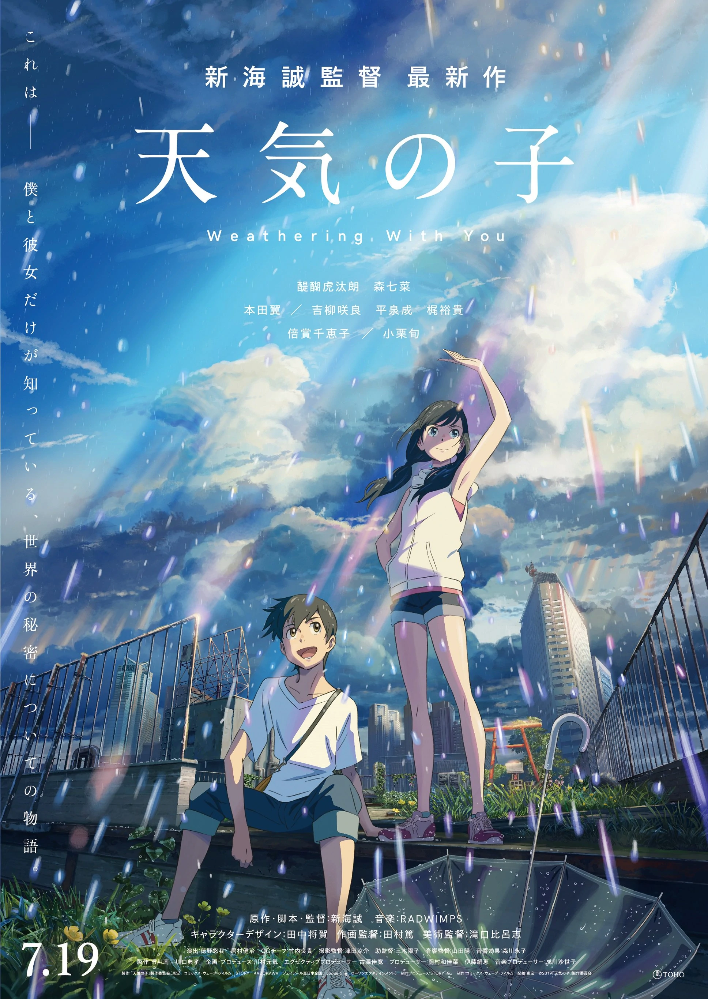

Anime Includes Movies!
Just as there are movies for normal shows, this is also the case for anime. These movies are often connected to the anime series and explain something that was not mentioned in the main show. Alternatively, they serve to extend the anime. Once an anime ends, just hope a movie is around the corner! Moreover, if these movies do not help explain events within the anime, it may also be its separate thing unrelated to the show. The examples provided below are not part of a series, they are simply movies. Although this is the case, these movies end up being good, hooking the viewer with its beautiful cinematics. The movie genre contains a long duration of cinema, neat animations, often serves as a story explaination, and more. Here are a few examples of anime movies.
A Silent Voice
 As a crazy youth, elementary school student Shouya Ishida wanted to overcome boredom in such cruelest ways. When the deaf Shouko Nishimiya transfers into his class, Shouya decides it is fun to thoughtlessly bully her. Ishida eventually sees this issue when her mother notifies the school, thus being singled out and blamed for everything done to her. With Nishimyia transferring out of the school, Ishida is left at the mercy of his classmates. He is ostracized all throughout the school and his teachers do the same. As he enters high school, he is still traumatized by his wrongdoings as a young boy. Regretting his past actions, he sets out on a journey to meet Ishida. This movie is about redemption and how one's actions can certainly have consequences. Will Nishimiya forgive Ishida? Will Ishida forever live with guilt? IMDb rated the movie a 8.1/10 and it aired in 2016.
As a crazy youth, elementary school student Shouya Ishida wanted to overcome boredom in such cruelest ways. When the deaf Shouko Nishimiya transfers into his class, Shouya decides it is fun to thoughtlessly bully her. Ishida eventually sees this issue when her mother notifies the school, thus being singled out and blamed for everything done to her. With Nishimyia transferring out of the school, Ishida is left at the mercy of his classmates. He is ostracized all throughout the school and his teachers do the same. As he enters high school, he is still traumatized by his wrongdoings as a young boy. Regretting his past actions, he sets out on a journey to meet Ishida. This movie is about redemption and how one's actions can certainly have consequences. Will Nishimiya forgive Ishida? Will Ishida forever live with guilt? IMDb rated the movie a 8.1/10 and it aired in 2016.
Your Name
 Mitsuha Miyamizu, a high school girl, is forced to live the life of a boy in the city of Tokyo, a dream that stands in stark contrast to her present life in the countryside. Meanwhile, Taki Tachibana lives a busy life as a high school student since he has a part-time job, hoping to become a future architect. One day, Miyamizu awakens in a room that is not her own and suddenly finds herself living the dream life in Tokyo but not in her own body! She lives this dream in Tachibana's body which is unusual. What about Tachibana? Well, he finds himself living Miyamizu's life in the humble countryside. Being drowned with curiousity and a lot of questions to this strange phenomenon, they begin to search for one another. This movie revolves around Miyamizu and Tachibana's actions, which begin to have a dramatic impact on each other's lives, drawing them closer. Does this movie not sound crazy? IMDb rated the movie a 8.4/10 and it aired in 2016.
Mitsuha Miyamizu, a high school girl, is forced to live the life of a boy in the city of Tokyo, a dream that stands in stark contrast to her present life in the countryside. Meanwhile, Taki Tachibana lives a busy life as a high school student since he has a part-time job, hoping to become a future architect. One day, Miyamizu awakens in a room that is not her own and suddenly finds herself living the dream life in Tokyo but not in her own body! She lives this dream in Tachibana's body which is unusual. What about Tachibana? Well, he finds himself living Miyamizu's life in the humble countryside. Being drowned with curiousity and a lot of questions to this strange phenomenon, they begin to search for one another. This movie revolves around Miyamizu and Tachibana's actions, which begin to have a dramatic impact on each other's lives, drawing them closer. Does this movie not sound crazy? IMDb rated the movie a 8.4/10 and it aired in 2016.
Weathering with You
This movie takes place in Tokyo where it is currently experiencing rain showers that seem to disrupt everyone's schedule. These rain showers never stop. High school student Hodaka Morishima, who struggles to financially support himself, saves orphaned Hina Amano from a couple of shady men, causing them to run away together. Subsequently, Morishima discovers that Amano has a strange yet astounding power. Her power is the ability to call out the sun whenever she prays for it. With Tokyo's unusual weather, Morishima sees the potential of this power as it will potentially stop the never-ending rain showers. He suggests that Amano should become a "sunshine girl", someone who will clear the sky for people. With this incredible power, one will assmue that it must be used responsibly. As they say, power comes with a heavy price! IMDb rated the movie a 7.5/10 and it aired in 2019.
Spirited Away
 Chihiro Ogino, a 10-year-old, is less than pleased when she and her parents discover an abandoned amusement park on the way to their new house. Being curious, Ogino ventures inside this amusement park and realizes that there is more to this place than meets the eye. Upon entering the amusement park, strange things begin to happen once dusk falls. For example, ghostly apparitions and food that turns her parents into pigs is one of the several strange things that happen. As it turns out, Ogino has unwittingly crossed over into the spirit world, hence the movie's title! To escape this world, she must summon the courage to live and work amongst spirits, with the help of the Haku. This movie showcases Ogino's journey through an unfamiliar world as she tries to escape it so she can save her parents from demise. IMDb rated the movie a 8.6/10 and it aired in 2001.
Chihiro Ogino, a 10-year-old, is less than pleased when she and her parents discover an abandoned amusement park on the way to their new house. Being curious, Ogino ventures inside this amusement park and realizes that there is more to this place than meets the eye. Upon entering the amusement park, strange things begin to happen once dusk falls. For example, ghostly apparitions and food that turns her parents into pigs is one of the several strange things that happen. As it turns out, Ogino has unwittingly crossed over into the spirit world, hence the movie's title! To escape this world, she must summon the courage to live and work amongst spirits, with the help of the Haku. This movie showcases Ogino's journey through an unfamiliar world as she tries to escape it so she can save her parents from demise. IMDb rated the movie a 8.6/10 and it aired in 2001.